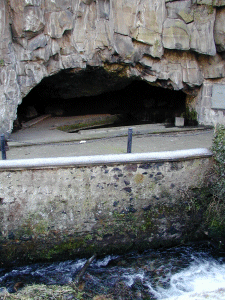
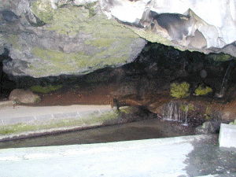

|

(Pour voir en plus grand :
cliquez... et fermez la nouvelle fenêtre
ensuite)
|

Plusieurs sources alimentent un lavoir.Cette eau,
qui surgit sous la coulée basaltique du Petit Puy de
Dôme , s'écoule dans la Tiretaine.
Ces sources ressemblent à celle de
l'Oradou,
mais le nymphée, ici, est naturel.
|